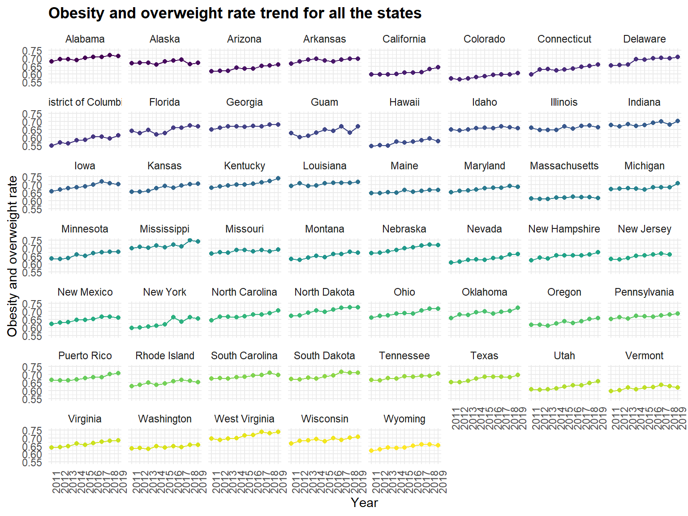
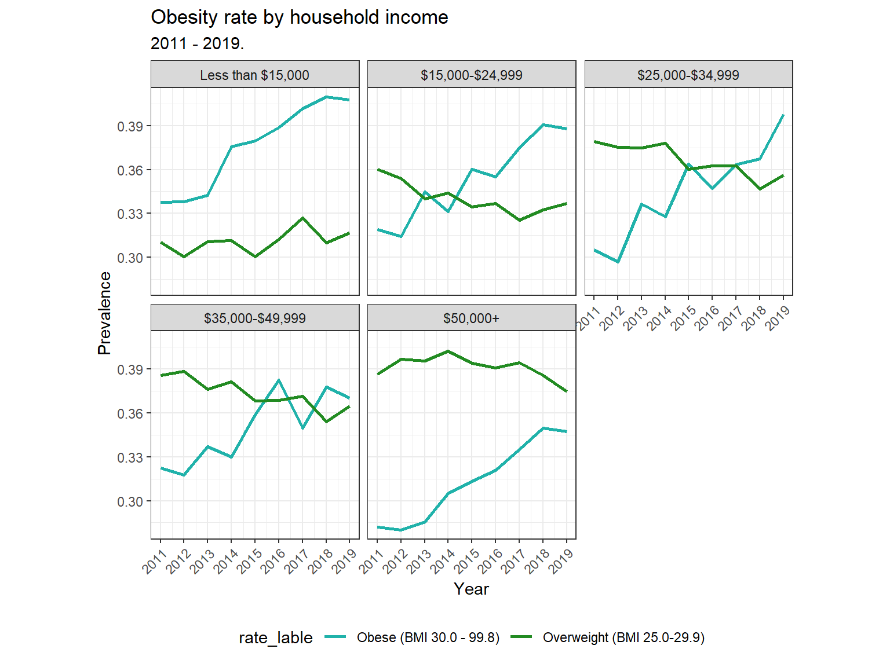

According to the World Health Organization (WHO), more than two-thirds of adults are obese or overweight and one-sixth of children are obese in the US. Obesity is the fifth leading risk for global death. People overweight have a higher risk of getting more than 60 chronic diseases like type 2 diabetes, heart disease, which also increases the medical cost. The association between obesity and education level, income is intricate and differs by gender, age, and race.
Outcomes
obese_overweight: Count of obese and overweight per year of all sates.obese_overweight_rate: Prevalence. Getting it by dividing the number of people with obese/overweight by total number of population in data multiplied by 100.Candidate Predictors
year: 2011 - 2019
locationabbr: state abbreviation, 56 states
locationdesc: state name, 56 states
response: normal weight (bmi 18.5-24.9); obese (bmi 30.0 - 99.8); overweight (bmi 25.0-29.9); underweight (bmi 12.0-18.4)
break_out_category: race/ethnicity; age group; household income; education attained; gender; overall
break_out: male; college graduate; white, non-Hispanic; $35,000-$49,999; $25,000-$34,999; $15,000-$24,999; 35-44; 25-34; 18-24; 55-64; (other) ; overall; some post-H.S.
sample_size: number of people in each category
data_value: crude prevalence, unit %, such as 14.7 means 14.7%
confidence_limit_low: the value that rank the 25%th of the tatall value
confidence_limit_high: the value that rank the 75%th of the tatall value
geo_location: longitude and latitude
break_out_category_id: gender(CAT2), age(CAT3), race/ethnicity(CAT4), education(CAT5)
breakout_id: eg: sex1, sex2, (in CAT2)
location_id: eg: 01, stands for different state
response_id: eg: RESP041.
First, import the data from Behavioral Risk Factor Sureillance System. We clean the data and create four data frames based on the predictors(gender, race, education level, household income) for future analysis.
load_df =
GET("https://chronicdata.cdc.gov/resource/fqb7-mgjf.csv",
query = list("$limit" = 50000)) %>%
content("parsed") %>%
janitor::clean_names()
tidy_df =
load_df %>%
filter(is.na(data_value_footnote)) %>%
dplyr::select(-class, -topic, -question, -data_value_unit, -data_value_type, -data_source, -data_value_footnote_symbol, -data_value_footnote, -question_id, -class_id, -topic_id, -states, -counties)
head(tidy_df)
#gender
gender_df =
tidy_df %>%
filter(break_out_category_id == "CAT2")
head(gender_df)
#race
race_df =
tidy_df %>%
filter(break_out_category_id == "CAT4")
head(race_df)
#education
education_df =
tidy_df %>%
filter(break_out_category_id == "CAT5")
head(education_df) To get a time trend of obese/overweight for each state, we calculate prevalence in each year for each state. Using functions like summary, group, filter to calculate total population in each year for each state and total population in each year for each state.
# total population in each state in each year
df.tot = load_df %>%
group_by(year,locationdesc) %>%
summarise(state_sum = sum(sample_size))
# total 'obese' and 'overweight' amount in each state in each year
df.overweight =
load_df %>%
filter(response %in% c("Obese (BMI 30.0 - 99.8)","Overweight (BMI 25.0-29.9)",
"Obese (bmi 30.0 - 99.8)","Overweight (bmi 25.0-29.9)")) %>%
group_by(year,locationdesc) %>%
summarise(state_overweight_sum = sum(sample_size))
df.rate = left_join(df.tot, df.overweight,
by = c("year" , "locationdesc")) %>%
mutate(over_rate = state_overweight_sum/state_sum)Next, cleaning data to find the state with highest average obese and overweight rate per year among all the states. After grouping data by locations and summing up mean value of obese/overweight, we find Nebraska has the highest average obese and overweight rate and we will choose this state for further analysis.
# total population in each state in each year
df.tot = load_df %>%
group_by(year,locationdesc) %>%
summarise(state_sum = sum(sample_size))
# total 'obese' and 'overweight' amount in each state in each year
df.overweight =
load_df %>%
filter(response %in% c("Obese (BMI 30.0 - 99.8)","Overweight (BMI 25.0-29.9)",
"Obese (bmi 30.0 - 99.8)","Overweight (bmi 25.0-29.9)")) %>%
group_by(year,locationdesc) %>%
summarise(state_overweight_sum = sum(sample_size))
df.rate = left_join(df.tot, df.overweight,
by = c("year" , "locationdesc")) %>%
mutate(over_rate = state_overweight_sum/state_sum)
#cleaning data for nebraska
df.highest = df.rate %>%
group_by(locationdesc) %>%
summarise(mean_overweight = mean(state_overweight_sum)) %>%
filter(mean_overweight == max(mean_overweight))
kable(df.highest, row.names = T, escape = F) %>%
kable_styling(bootstrap_options = "striped", full_width = F)After choosing to focus on Nebraska, data were limited to this state. Dividing the number of people with obese/overweight by total number of population in the selected data multiplied by 100 to get the prevalence of obese/overweight for each year in Nebraska. Based on the data, we will visualize the obese/overweight differences by race, gender, education, and household income.
# prevalence of obese/obesity in Nebraska
ne_df =
load_df %>%
filter(is.na(data_value_footnote)) %>%
select(-class, -topic, -question, -data_value_unit, -data_value_type, -data_source, -data_value_footnote_symbol, -data_value_footnote, -question_id, -class_id, -topic_id, -states, -counties) %>%
filter(locationabbr == "NE")
time_df =
ne_df %>%
filter(response_id %in% c("RESP039", "RESP040") ) %>%
select(year, response_id, sample_size) %>%
group_by(year, response_id) %>%
mutate(count_obese = sum(sample_size)) %>%
select(-sample_size) %>%
distinct()
total_df =
ne_df %>%
select(year, response_id, sample_size) %>%
group_by(year) %>%
mutate(count_total = sum(sample_size)) %>%
select(-sample_size) %>%
filter(response_id %in% c("RESP039", "RESP040") ) %>%
distinct()
rate_time =
left_join(time_df, total_df,by = c("year" , "response_id")) %>%
mutate(
prevalence = count_obese / count_total,
rate_lable = case_when(
response_id == "RESP039" ~ "Obese (BMI 30.0 - 99.8)",
response_id == "RESP040" ~ "Overweight (BMI 25.0-29.9)"
)
) %>%
mutate(prevalence = round(prevalence, digits = 4)) Use library(plotly) to visualizing the US obesity and overweight rate geographically (on a map), including the average amount of obesity and overweight from 2011 to 2019. It is clear that all states have as increasing trend of obese and overweight amount from 2011 to 2019.
# Use library(plotly) to visualizing the US obesity and overweight rate geographically (on a map), including the average amount of obesity and overweight from 2011 to 2019.
df.rate1 = df.rate %>%
group_by(locationdesc) %>%
mutate(mean_amount = mean(state_overweight_sum))
df.rate1 = df.rate1[-which(df.rate1$locationdesc %in% c("All States and DC (median) **","All States, DC and Territories (median) **","Virgin Islands") ),]
df.rate1$region = tolower(df.rate1$locationdesc)
states = map_data("state")
# merge the datasets
states = merge(states, df.rate1, by = "region", all.x = T)
##### US states obesity time trend: scatter plot with line
ggplot(data = df.rate[-which(df.rate$locationdesc %in% c("All States and DC (median) **","All States, DC and Territories (median) **","Virgin Islands") ),],
aes(year, y = over_rate)) +
geom_line(aes(color = locationdesc)) +
geom_point(aes(color = locationdesc),size = 1.5) +
facet_wrap(~ locationdesc) +
theme(legend.position = "None",
#text = element_text(family='Kai'),
axis.text.x = element_text(angle = 90, hjust = 1)) +
scale_x_continuous(breaks = seq(2011,2019,1)) +
xlab("Year") + ylab("Obesity and overweight rate") +
ggtitle("Obesity and overweight rate trend for all the states")
Prevalence of obese/overweight in Nebraska:
According to overview, Nebraska owns the highest rate of overweight and obese. From the line plot, we can see the prevalence of overweight decreased slightly while the prevalence of obese increased significantly over year. The total rate of people whose BMI is greater than 25 reaches almost 70% (rate of obese is 36%) in 2019.
rate_time %>%
group_by(rate_lable) %>%
mutate(text_label = str_c("Year:", year, "\nPrevalence:", prevalence)) %>%
plot_ly(
x = ~year,
y = ~prevalence,
#type = 'scatter',
#mode = "lines+markers",
textposition = "bottom right",
color = ~rate_lable,
colors = c('#FFD700', '#FF8C00'),
text = ~text_label,
line = list(simplyfy = F),
alpha = 0.8
) %>%
layout(
legend = list(x = 0.5, y = 0.15),
title = "Obesity rate trend over time",
xaxis = list(title = "Year",
zeroline = TRUE),
yaxis = list(title = "Prevalence",
zeroline = TRUE),
updatemenus = list(
list(
x = 0.7,
y = 0.4,
buttons = list(
list(method = "restyle",
args = list("type", "scatter"),
label = "Line"),
list(method = "restyle",
args = list("type", "bar"),
label = "bar")))
)
) Obese/overweight by Race/Ethnicity:
Combining data from 2011 through 2019, non-Hispanic American Indian or Alaskan Native had the highest prevalence of self-reported obesity (47.13%), followed by non-Hispanic Black adults (41.81%) and
non-Hispanic Multiracial(39.74%). Non-Hispanic White adults own the lowest obesity rate(31.95%).
ne_race_df =
ne_df %>%
filter(break_out_category_id == "CAT4") %>%
select(year, locationabbr, locationdesc, response, break_out, sample_size, response_id) %>%
group_by(year, break_out) %>%
mutate(count_race = sum(sample_size)) %>%
filter(response_id %in% c("RESP039") ) %>%
mutate(race_pre = round(sample_size / count_race, digit = 4))
obesity_rate_by_race =
ne_race_df %>%
group_by(break_out) %>%
mutate(sum_race = sum(sample_size),
sum_obese = sum(count_race),
obesity_rate = round(sum_race/sum_obese, digits = 4)) %>%
select(break_out, obesity_rate) %>%
distinct() %>%
arrange(desc(obesity_rate))
fig_race_2 =
ne_race_df %>%
filter(break_out != "Other, non-Hispanic") %>%
mutate(text_label = str_c("Race/Ethnicity:", break_out, "\nPrevalence:", race_pre)) %>%
plot_ly( x = ~year , y = ~race_pre, type = "bar", color = ~break_out, text = ~text_label, alpha = 0.7) %>%
layout(
title = "Difference between race group over year",
legend = list(font = list(size = 8), x = 0.5, y = 0.05),
xaxis = list(title = "Year",
zeroline = TRUE,
rangeselector = list(
buttons = list(
list(
count = 3,
label = "3 year",
step = "year",
stepmode = "backward"),
list(
count = 6,
label = "6 year",
step = "year",
stepmode = "backward"),
list(
count = 1,
label = "YTD",
step = "year",
stepmode = "todate"),
list(step = "all"))),
rangeslider = list(type = "date")
),
yaxis = list(title = "Prevalence",
zeroline = TRUE))
fig_race_2Obese/overweight by gender:
According to the plot, the obesity rate of both women and men kept increasing over year and exceeded 0.35 since 2018. However, obesity rate of women always significantly lower than that of man.
ne_gender_df =
ne_df %>%
filter(break_out_category_id == "CAT2") %>%
select(year, locationabbr, locationdesc, response, break_out, sample_size, response_id) %>%
group_by(year, break_out) %>%
mutate(count_gender = sum(sample_size)) %>%
filter(response_id %in% c("RESP039") ) %>%
mutate(gender_pre = round(sample_size / count_gender, digit = 4))
ay = list(
tickfont = list(color = "#767B84"),
overlaying = "y",
side = "right",
title = "Prevalence",
automargin = TRUE
)
ne_gender_df %>%
group_by(break_out) %>%
mutate(
text_label_1 = str_c("gender:", break_out, "\nCount:", sample_size),
text_label_2 = str_c("gender:", break_out, "\nPrevalence:", gender_pre)
) %>%
plot_ly(
x = ~year,
y = ~sample_size,
type = "bar",
color = ~break_out,
colors = c("#F1948A", "#85C1E9"),
text = ~text_label_1,
alpha = 0.7) %>%
add_lines(x = ~year, y = ~gender_pre, color = ~break_out, text = ~text_label_2, yaxis = "y2") %>%
layout(
title = "Obesity rate by gender",
xaxis = list(title = "year",
zeroline = TRUE),
yaxis = list(title = "Count",
zeroline = TRUE),
yaxis2 = ay,
legend = list(
x = 0.7,
y = 0.1)
)Obese/Overweight approximately decreased by level of education:
The level of Education people have are divided into 4 levels, showing bellow in an increasing order:
-Less than H.S: People didn’t attend high school
-H.S. or G.E.D: High school graduates or people pass General Educational Development test
-Some post-H.S: Any school or specialized training which takes place after high school graduation
-College graduate:College graduates
The pie plot shows that the rate of H.S or G.E.D and Some post-H.S are all around 30%, and the rate of Less than H.S is 6%. According to the line plot, the obese/overweight of all groups kept increasing over year. College graduate group always owns the lowest obese/overweight rate, which might benefit of their self-discipline. Less than H.S group owns the highest obesity rate, however, the rate dropped dramatically between 2018 and 2019. The lines of Less than H.S group, Some post-H.S group, and H.S or G.E.D group intersects. From the trend, we conclude that the obese/obesity rate decrease as education level increase.
ne_edu_df =
ne_df %>%
filter(break_out_category_id == "CAT5") %>%
select(year, locationabbr, locationdesc, response, break_out, sample_size, response_id) %>%
group_by(year, break_out) %>%
mutate(count_edu = sum(sample_size)) %>%
filter(response_id %in% c("RESP039") ) %>%
mutate(edu_pre = round(sample_size / count_edu, digit = 4))
edu_rate =
ne_edu_df %>%
select(break_out, count_edu, year) %>%
distinct() %>%
group_by(break_out) %>%
mutate(sum_edu = round(sum(count_edu/9), digits = 0))
fig_edu_1 =
edu_rate %>%
plot_ly(labels = ~break_out, values = ~sum_edu,
textposition = 'inside',
textinfo = 'label+percent',
insidetextfont = list(color = '#483C32'),
hoverinfo = 'text',
domain = list(row = 0, column = 1),
text = ~paste('Education Attained:', break_out, ' \nNumber', count_edu),
marker = list(colors = c('#6f4d96','#f3cec9','#cd7eaf','#e7a4b6'),
line = list(color = '#FFFFFF', width = 1)),
showlegend = F
) %>% add_pie(hole = 0.5)
fig_edu_2 =
ne_edu_df %>%
group_by(break_out) %>%
mutate(text_label = str_c("Education Attained:", break_out, "\nPrevalence:", edu_pre)) %>%
plot_ly(
x = ~year ,
y = ~edu_pre,
domain = list(row = 0, column = 0),
type = 'scatter',
mode = "lines+markers",
#type = "bar",
color = ~break_out,
colors = c('#6f4d96', '#e7a4b6', '#f3cec9','#cd7eaf' ),
text = ~text_label,
alpha = 0.7) %>%
layout(
title = "Obesity rate by Education",
legend = list( showlegend = T),
xaxis = list(title = "Education Attained",
zeroline = TRUE),
yaxis = list(title = "Prevalence",
zeroline = TRUE))
subplot(fig_edu_2 , fig_edu_1) %>% layout(legend = list(x = 0.3, y = 0.04, font = list(size = 8), showlegend = F), grid = list(rows = 1, columns = 2))Obese/Obesity rate trend of household income:
From the plots, we can see people with lower household income tend to have higher obese rate and lower overweight rate. The overweight rate decreased while obesity rate increased over time.
ne_income_df =
ne_df %>%
filter(break_out_category_id == "CAT6") %>%
select(year, locationabbr, locationdesc, response, break_out, sample_size, response_id) %>%
group_by(year, break_out) %>%
mutate(count_income = sum(sample_size)) %>%
filter(response_id %in% c("RESP039", "RESP040")) %>%
mutate(
income_pre = round(sample_size / count_income, digit = 4),
rate_lable = case_when(
response_id == "RESP039" ~ "Obese (BMI 30.0 - 99.8)",
response_id == "RESP040" ~ "Overweight (BMI 25.0-29.9)")
)
ne_income_df %>%
mutate(break_out = factor(break_out, levels = c("Less than $15,000", "$15,000-$24,999", "$25,000-$34,999", "$35,000-$49,999", "$50,000+"))) %>%
ggplot(aes(x = year, y = income_pre, color = rate_lable)) +
geom_line(size = 1) +
scale_color_manual(values=c("#20B2AA", "#228B22")) +
theme_bw() +
theme(aspect.ratio = 1, axis.text.x = element_text(angle = 45, hjust = 1)) +
facet_wrap(~break_out) +
theme(legend.position = "bottom") +
labs(title = "Obesity rate by household income",
subtitle = "2011 - 2019.",
x = "Year",
y = "Prevalence") +
scale_x_continuous(breaks = seq(2011,2019,1)) 